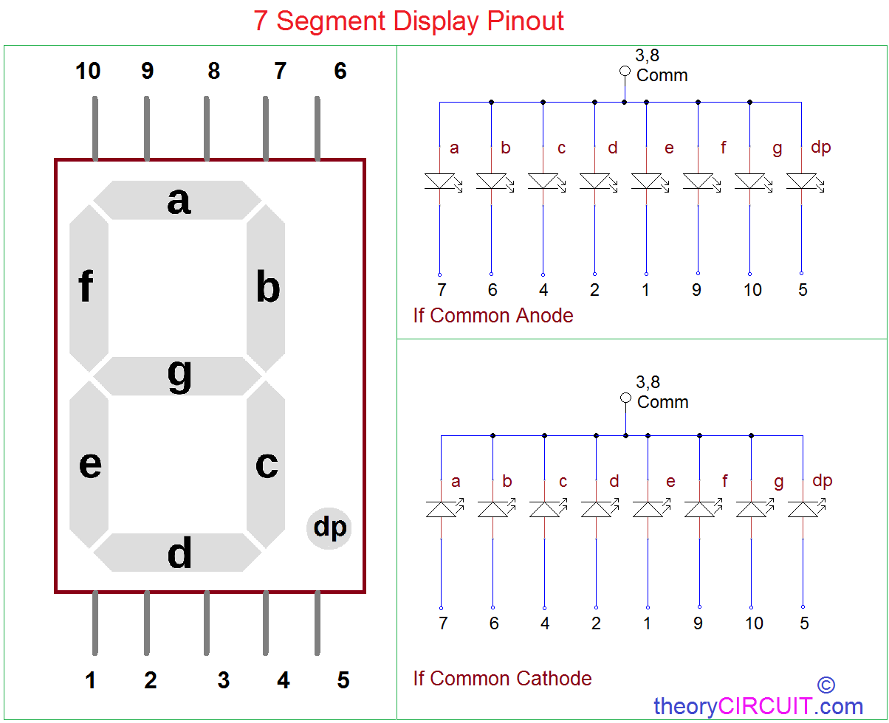
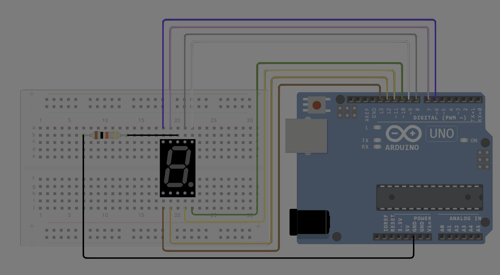
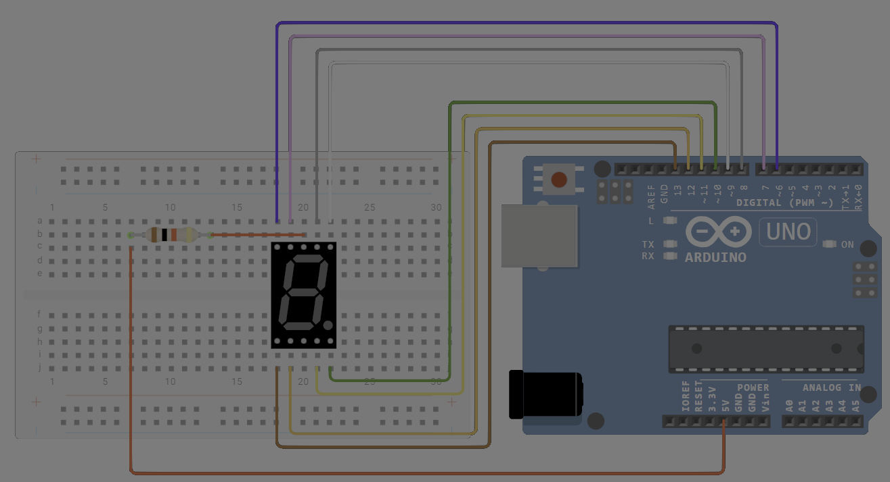

🛠️ دليل الأردوينو العملي: التحكم بشاشة الأرقام السباعية (7-Segment Display)
📌 مقدمة: مرحباً بكم في درس اليوم 🚀
بعد تعلمنا أساسيات برمجة الأردوينو والتحكم بمكونات بسيطة مثل اللمبات والأزرار، حان الوقت للتعامل مع مكون إلكتروني جديد ومهم اسمه شاشة الأرقام السباعية.
في هذا الدرس، سنتعلم:
- ما هي شاشة الأرقام السباعية وكيف تعمل من الداخل؟
- كيف نقوم بتوصيلها بالأردوينو بشكل صحيح؟
- كيف نكتب كوداً برمجياً لعرض الأرقام من 0 إلى 9؟
- وكيف نصنع عدّاداً رقمياً يعمل بشكل متكرر!
🧠 1. ما هي الشاشة سباعية الأجزاء؟
تخيل رقم 8 كبير مكوناً من 7 لمبات إضاءة صغيرة (LEDs) مرتبة بشكل معين. كل لمبة من هذه اللمبات تمثل جزءاً معيناً ويرمز لها بحرف من a إلى g:
-- a -- ← الجزء العلوي
| |
f b ← f يسار فوق، b يمين فوق
| |
-- g -- ← الجزء الأوسط
| |
e c ← e يسار تحت، c يمين تحت
| |
-- d -- ← الجزء السفلي
• dp ← النقطة العشرية (اختيارية)

أنواع الشاشات:
- الكاثود المشترك (Common Cathode - CC):
جميع الأطراف السالبة لللمبات موصولة معاً في نقطة واحدة. لتشغيل أي لمبة، يجب إرسال إشارةHIGH(1) لها. - الأنود المشترك (Common Anode - CA):
جميع الأطراف الموجبة لللمبات موصولة معاً. لتشغيل أي لمبة، يجب إرسال إشارةLOW(0) لها.
💡 ملاحظة: في هذا الدرس سنعتبر أننا نستخدم نوع الكاثود المشترك.
🔌 2. مخطط الأرجل والتوصيل الكهربائي
تحتوي الشاشة على 10 أرجل (5 في الأعلى و 5 في الأسفل).
جدول التوصيل بأردوينو أونو:
| الجزء (Segment) | رجل الشاشة | رجل الأردوينو | المقاومة |
|---|---|---|---|
| a | 7 | Pin 2 | 220Ω |
| b | 6 | Pin 3 | 220Ω |
| c | 4 | Pin 4 | 220Ω |
| d | 2 | Pin 5 | 220Ω |
| e | 1 | Pin 6 | 220Ω |
| f | 9 | Pin 7 | 220Ω |
| g | 10 | Pin 8 | 220Ω |
| dp | 5 | Pin 9 (اختياري) | 220Ω |
| COM (GND) | 3 أو 8 | Arduino GND | - |



⚠️ تنبيه هام:
لا تقم بتوصيل الشاشة بدون مقاومات 220Ω على كل رجل! المقاومات ضرورية لتحديد التيار المار وحماية اللمبات والأردوينو من التلف.
📊 3. جدول المنطق للأرقام (Truth Table)
كل رقم يُشكّل عن طريق تشغيل مجموعة محددة من اللمبات وإطفاء الباقي.
القيمة 1 تعني تشغيل اللمبة، والقيمة 0 تعني إطفاؤها.
| الرقم | a | b | c | d | e | f | g | التكوين |
|---|---|---|---|---|---|---|---|---|
| 0 | 1 | 1 | 1 | 1 | 1 | 1 | 0 | كل الأجزاء ما عدا الأوسط |
| 1 | 0 | 1 | 1 | 0 | 0 | 0 | 0 | الجانب الأيمن فقط |
| 2 | 1 | 1 | 0 | 1 | 1 | 0 | 1 | تكوين يشبه حرف S |
| 3 | 1 | 1 | 1 | 1 | 0 | 0 | 1 | تكوين يشبه حرف U |
| 4 | 0 | 1 | 1 | 0 | 0 | 1 | 1 | تكوين يشبه حرف h |
| 5 | 1 | 0 | 1 | 1 | 0 | 1 | 1 | تكوين يشبه حرف S مقلوب |
| 6 | 1 | 0 | 1 | 1 | 1 | 1 | 1 | تكوين يشبه حرف O مع ذيل |
| 7 | 1 | 1 | 1 | 0 | 0 | 0 | 0 | الجزء العلوي والجانب الأيمن |
| 8 | 1 | 1 | 1 | 1 | 1 | 1 | 1 | كل الأجزاء مضاءة ⭐ |
| 9 | 1 | 1 | 1 | 1 | 0 | 1 | 1 | تكوين يشبه حرف g مقلوب |
💻 4. كتابة البرنامج
الطريقة الأولى: الكود المباشر (للمبتدئين)
/*
* مشروع شاشة الأرقام السباعية
* الطريقة المباشرة: استخدام مصفوفة لجدول المنطق
*/
// الأرجل من a إلى g موصولة بالأرجل 2 إلى 8
int segmentPins[7] = {2, 3, 4, 5, 6, 7, 8};
// جدول المنطق: كل صف يمثل رقماً، وكل عمود يمثل حالة الجزء (a إلى g)
int numPatterns[10][7] = {
{1, 1, 1, 1, 1, 1, 0}, // 0
{0, 1, 1, 0, 0, 0, 0}, // 1
{1, 1, 0, 1, 1, 0, 1}, // 2
{1, 1, 1, 1, 0, 0, 1}, // 3
{0, 1, 1, 0, 0, 1, 1}, // 4
{1, 0, 1, 1, 0, 1, 1}, // 5
{1, 0, 1, 1, 1, 1, 1}, // 6
{1, 1, 1, 0, 0, 0, 0}, // 7
{1, 1, 1, 1, 1, 1, 1}, // 8
{1, 1, 1, 1, 0, 1, 1} // 9
};
// دالة تقوم بعرض رقم واحد على الشاشة
void displayDigit(int digit) {
// التأكد من أن الرقم المدخل ضمن النطاق الصحيح
if (digit < 0 || digit > 9) return;
// تطبيق الحالة (تشغيل أو إطفاء) لكل جزء بناءً على الجدول
for (int i = 0; i < 7; i++) {
digitalWrite(segmentPins[i], numPatterns[digit][i]);
}
}
void setup() {
// تهيئة كل الأرجل لتعمل كمخرجات
for (int i = 0; i < 7; i++) {
pinMode(segmentPins[i], OUTPUT);
}
}
void loop() {
// عدّ تصاعدي من 0 إلى 9، مع إبقاء كل رقم ظاهراً لثانية واحدة
for (int number = 0; number <= 9; number++) {
displayDigit(number);
delay(1000); // انتظار ثانية
}
}
شرح آلية عمل الكود:
| الخطوة | الدالة | الوظيفة |
|---|---|---|
| 1. التحضير | setup() |
تهيئة أرجل الأردوينو لتعمل كمخرجات (Outputs). |
| 2. العرض | displayDigit(n) |
قراءة جدول المنطق وإرسال إشارات التشغيل والإطفاء للأرجل المناسبة. |
| 3. التكرار | loop() |
استدعاء دالة العرض بشكل متسلسل لعمل عداد رقمي لا يتوقف. |
الطريقة الثانية: الكود عالي السرعة (باستخدام السجلات) 🚀
هذه الطريقة موجهة للمستوى المتقدم، حيث تستخدم السجلات (Registers) داخل المتحكم للتحكم في الأرجل بشكل مباشر وأسرع بكثير.
الأرجل من 2 إلى 7 تتبع سجل PORTD، والرجل 8 يتبع سجل PORTB.
/*
* مشروع التحكم عالي السرعة باستخدام السجلات
* الأرجل 2..7 ← PORTD (البتات 2..7)
* الرجل 8 ← PORTB (البت 0)
*/
// الأنماط الثنائية للأرقام (البت 0 = a، البت 6 = g)
byte digitBitmaps[10] = {
0b00111111, // 0
0b00000110, // 1
0b01011011, // 2
0b01001111, // 3
0b01100110, // 4
0b01101101, // 5
0b01111101, // 6
0b00000111, // 7
0b01111111, // 8
0b01101111 // 9
};
void showDigitFast(byte digit) {
if (digit > 9) return;
byte pattern = digitBitmaps[digit];
// الأجزاء a-f ← الأرجل 2..7 (PORTD)
PORTD = (PORTD & 0b00000011) | (pattern << 2);
// الجزء g ← الرجل 8 (PORTB - البت 0)
if (pattern & (1 << 6)) {
PORTB |= (1 << PB0); // تشغيل
} else {
PORTB &= ~(1 << PB0); // إطفاء
}
}
void setup() {
// تعيين الأرجل 2-7 لتعمل كمخرجات
DDRD |= 0b11111100;
// تعيين الرجل 8 ليعمل كمخرج
DDRB |= (1 << DDB0);
}
void loop() {
for (int i = 0; i <= 9; i++) {
showDigitFast(i);
delay(1000);
}
}
💡 لماذا نستخدم هذه الطريقة؟
عند الحاجة إلى سرعة استجابة عالية جداً، مثل عندما تريد التحكم في أكثر من شاشة في نفس الوقت باستخدام تقنية التبديل (التي سنشرحها لاحقاً).
🏋️♂️ 5. تمارين وتحديات تطبيقية
🎯 التمرين الأول: العدّ التنازلي مع تنبيه صوتي! ⏰
المطلوب: تعديل الكود لجعل الشاشة تعد تنازلياً من 9 إلى 0.
الإضافة: عند الوصول إلى الرقم 0، يتم تشغيل طنّان (Buzzer) موصل بالرجل 10 لمدة ثانية واحدة.
فكرة الحل:
// داخل دالة loop():
for (int number = 9; number >= 0; number--) {
displayDigit(number);
delay(1000);
}
// بعد انتهاء العد التنازلي:
digitalWrite(10, HIGH); // تشغيل الطنّان
delay(1000);
digitalWrite(10, LOW); // إيقاف الطنّان
🎯 التمرين الثاني: العدّ التفاعلي باستخدام زر! 🔘
المطلوب: وصّل زر ضاغط بالرجل 11.
سلوك النظام:
1. تبقى الشاشة تعرض الرقم الحالي بدون تغيير تلقائي.
2. عند كل ضغطة على الزر، يزيد الرقم المعروض بواحد.
3. عند الوصول للرقم 9 والضغط مرة أخرى، يعود العدّاد للرقم 0.
فكرة الحل:
int currentNumber = 0;
void loop() {
if (digitalRead(11) == HIGH) { // التحقق من ضغط الزر
currentNumber++;
if (currentNumber > 9) currentNumber = 0;
displayDigit(currentNumber);
delay(200); // انتظار بسيط لمنع تكرار القراءة (Debouncing)
}
}
🧠 ملاحظة تقنية: الأمر
delay(200)بعد قراءة الزر يمنع الأردوينو من تسجيل الضغطة الواحدة كعدة ضغطات متتالية بسبب خاصية الارتداد الميكانيكي في الأزرار (Bouncing).
🎯 التحدي المتقدم: التحكم بشاشتين باستخدام أرجل محدودة! 🤯
السؤال: إذا أردنا عرض رقم مكون من خانتين (مثل 25 أو 99)، فهل نحتاج إلى 14 رجلاً من الأردوينو (7 لكل شاشة)؟
الجواب: لا، هناك طريقة هندسية أذكى تُعرف بـ التبديل المتعدد (Multiplexing).
في هذه الطريقة، نوصل الأرجل السبعة للشاشتين معاً بالتوازي، ونقوم بتحديد أي شاشة تعمل في لحظة معينة عبر رجل إضافي لكل شاشة. نقوم بالتبديل بين الشاشتين بسرعة كبيرة جداً؛ وبسبب خاصية بقاء الصورة في العين البشرية (Persistence of Vision)، سترى العين الشاشتين مضاءتين معاً بشكل مستمر!
📝 6. ملخص الدرس
| النقطة | الشرح |
|---|---|
| طبيعة الشاشة | عبارة عن 7 لمبات LED مرتبة لتكوين أرقام. |
| الأنواع | كاثود مشترك (تشغيل بـ HIGH) / أنود مشترك (تشغيل بـ LOW). |
| الحماية الكهربائية | مقاومات 220Ω ضرورية لكل رجل لتجنب التلف. |
| المنطق البرمجي | نستخدم جدولاً ثنائياً (0 و 1) لتحديد الأجزاء المضاءة لكل رقم. |
| البرمجة المباشرة | باستخدام دالة digitalWrite مع مصفوفات. |
| البرمجة المتقدمة | باستخدام سجلات المتحكم PORTD و PORTB لزيادة السرعة. |
| التطبيقات العملية | الساعات الرقمية، عدّادات الأشخاص، أجهزة قياس رقمية. |
🎓 حقائق علمية ومهنية!
- ⭐ الرقم 8 هو الرقم الوحيد الذي يتطلب تشغيل جميع الأجزاء السبعة في نفس الوقت.
- 🔢 الرقم 1 هو الأقل استهلاكاً للطاقة، حيث يحتاج إلى تشغيل لمبتين فقط (b و c).
- 🧩 الجزء g (الخط الأوسط) يعتبر الجزء الأكثر تأثيراً في التفرقة بين الأشكال المختلفة للأرقام.
- 🏎️ تقنية التبديل المتعدد (Multiplexing) لا تقتصر على الشاشات، بل تُستخدم في تصميم لوحات المفاتيح والمصفوفات الإلكترونية لتوفير مساحة الأرجل.
🚀 أحسنتم! قوموا بتطبيق الدوائر وكتابة الأكواد، ثم حاولوا إضافة تحسيناتكم الخاصة عليها. بالتوفيق في المعمل! ⚡💻🔧